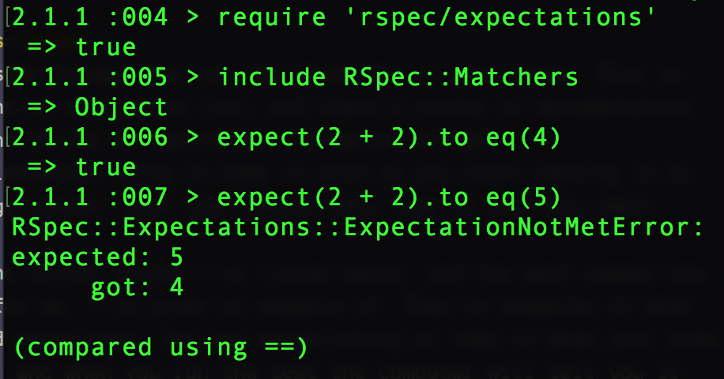

How I Learned to Stop Worrying and Love Unit Testing
Hello and welcome to my talk on unit testing. I'm Valerie Woolard
Srinivasan, I'm a software engineer at Panoply, where I help build
tools for your favorite podcasts. Find me in the hallway later or
on Twitter, my handle is valeriecodes, for podcast recommendations,
but right now we're going to talk about testing.
Before we get into the talk, I also want to take a moment to
appreciate our location in the beautiful city of New Orleans and to
borrow an Austrialian tradition called the acknowledgement of country,
which is something I first saw Pat Allen do at Nation Ruby, to
acknowledge the native people who first lived on this land.
I take time to acknowledge the Choctaw, Houma, and other tribes, the
traditional custodians of this land, and pay respects to their elders
past and present, and I extend that respect to other indigenous people
who are present.
Thank you for taking the time to appreciate their contributions to
this land and this culture with me, and for coming to attend this talk.
Let's get started.
I'm happy to be kicking off the testing track, I hope that this can
teach you something if you're already doing testing and to give you
an idea of where to start if it's something new to you.
I chose this gif of Kermit the frog, partly because I love Kermit
the frog and it made me laugh.
But the other reason is that I love the carefree nature shown here.
I think that a lot of the power of testing is confidence. Good tests
allow you to be confident that you won't accidentally break something.
Good tests allow you to change code and verify that it works the same
way it did before. Good tests let you worry less. Maybe they don't let
you be as care-free as Kermit, but they come close.
What are tests for?
Let's start right off the bat with: What are tests even for in the
first place? Some of you may be fairly new to software and just know
that testing is probably something you should do without knowing why.
I talked a little bit about confidence, and one way you can think
about tests is as an act of kindness. When you write a test, you are
taking the time to verify that your code works. This is a favor to
your teammates and your future self. Think of it as an investment.
Coming into a new codebase or starting on a new project often feels
familiar in certain ways, it may be a language you're familiar with
or a type of application that you've built before, but there are gaps,
like playing croquet with a flamingo and a hedgehog. Your old
assumptions may not hold true, and you have to figure out where the
gaps are between your understanding and reality.
Tests help bridge that gap.
Who are tests for?
To all viewers but yourself, what matters is the product: the finished artwork. To you, and you alone, what matters is the process
— David Bayles & Ted Orland, Art & Fear
Let's also take a moment to talk about who your tests are for.
There's a bit of a story behind this quote. My parents are both in the art
world, and got me this book written by a friend of theirs about being
a professional artist. I'm pretty sure they were hoping I'd be a
professional artist. I'm not. But I really love this book, called
Art & Fear, because I think that it's incredbily relevant to
programming and all sorts of creative work.
I'm really obsessed with it, and this will not be that last time I
quote it in this talk. I have an idea for this talk where I just
lecture about this book in the context of programming, but that's
for another day, I just had to sneak it in somehow.
"To all viewers but yourself, what matters is the product: The
finished artwork. To you and you alone, what matters is the process"
In the context of software, the process of creating your artwork is a
collaborative one, so it's definitely a little different than being a
solo artist, unless you're just working on a side project by yourself.
That said, writing tests is part of the proccess of writing software,
not the finished product. A user of your application doesn't care
about your tests as long as the product works. You should care about
writing tests because they will help you to build a product that works.
If you're a user, you'd probably rather use a product that works perfectly
and has no tests, but as a software developer you'd much rather use a
product that has some issues but is well-tested.
Protecting against bugs
The first and perhaps most obvious function of tests is protecting against
bugs, or at least catching those bugs before they make their way to
production.
The software that you're working on is likely to be a very complex
system. You're probably not going to be the only one modifying it,
and it's not going to be possible to understand or keep track of
what's going on in every part of the application.
A test is an audit trail of how something is supposed to work. When
a test fails, you should have some proof or paper trail of when that
thing used to work so that you have an easier time identifying what
broke it.
Use tests to prove that your code does what you say it does when you
write it.
Ideally, you use a continous integration proccess to test your code
every time there is a new commit. Good tests coupled with continuous
integration will allow you to pinpoint and quickly correct any code
that breaks your tests.
Documentation
def number
# always returns 4
4
end
def number
# always returns 4
5
end
it 'always returns 4' do
expect(number).to eq(4)
end
Another great asset that tests can provide for you is documentation.
You may be more familiar with writing documentation in the form of
comments or internal wikis, but that can get out of date quickly
and cause trouble. For example, here I've written a method that
returns 4 and a comment explaining it. However, if I change the
return value of the method, the comment remains, as a terrible,
blatant lie.
If you're using continuous integration, tests have to be updated
when they fail, so they are more likely to reflect the current
state of the codebase than comments.
In the above example, nothing forces the comment to be updated when the
output of the function is actually switched to five. In a less trivial
case, this could lead to comments giving future developers (including
yourself!) misleading information about the actual state of the code.
Good tests can serve as an introduction to your code. Well-written tests,
along with well-named functions and variables,should explain the
desired behavior of your code as well as testing its functionality.
Encouraging good practices
Tests are the canary in the coal mine; when the design is bad, testing is hard.
— Sandi Metz, Practical Object-Oriented Design in Ruby
Tests can
help prompt you when your code is getting too complex and help
encourage good practices. As Sandi Metz said in Practical Object-Oriented
Design in Ruby, "Tests are the canary in the coal mine; when design is bad,
testing is hard."
Writing tests as you write your code will help give you an idea of
where the complexities in your code are. If you are not sure how to
test a method, that method might be too complex and need to be
broken up into smaller functionality.
If you find yourself having to write lots of scaffolding in order
to even run your tests, this can help to signal that the class you're
working with might have too many external dependencies.
The Law of Demeter in object oriented programming states that each
unit should only have limited knowledge of other units, and that a
unit should only talk to its immediate friends. Writing unit tests
provides a great opportunity to test this. How much does your class
actually need from neighboring classes? If it's too much, then writing
unit tests will be more complicated. This is a hint to you to go back
and simplify the code that you're testing.
Allowing for confidence in refactor
Allowing for confidence in refactor. One great thing about testing
is that it makes refactoring possible. If you've got some code that's
written in a way that makes it very difficult to reason about, you
can't rewrite it if you can't reason about it in the first place.
How are you going to preserve all that functionality without knowing
what it is?
Without tests, it's impossible to make changes to your code and
ensure that you haven't broken other things. You are, indeed, living
very dangerously, because your only conception of how the code is
supposed to work is within your own head, and you have no way of
verifying that this lines up with how it actually works or how it was
orignally intended to work without tests.
Efficient refactoring is only possible with a well-written test suite.
This is an example of how taking the time to write good tests will
save you time in the future. Refactoring is a hugely important part
of writing good code, just as revision is an important part of writing.
Remember in high school when you were writing an essay, and as soon as
you got to the right word count you just hit print and handed it in.
I was always terrified to re-read them because I was worried I'd
find a mistake and go back and have to do a bunch of work.
This isn't really a sustainable way to work, especially in the
context of a code base. Writing code without tests is a lot like
this. You're not only depriving yourself of the chance to introspect
a bit more about the code you've just written while it's fresh in
your mind, you're also depriving future developers or more insight
into how your code is supposed to work and how to tell if it is
working. This knowledge is essential to making changes later.
You make good work by (among other things) making lots of work that
isn't very good, and gradually weeding out the parts that aren't good
— David Bayles & Ted Orland, Art & Fear
Here's another quote from Art & Fear. This quote struck me in the
context of testing, because I feel like it's also kind of about refactoring.
"You make good work by (among other things) making lots of work that
isn't very good, and gradually weeding out the parts that aren't good"
I think this is absolutely true about programming as well. I do most
of my work by just putting my fingers to the keyboard and reasoning
out the problem at hand in whatever manner first comes to me.
This is often pretty repetitive and sometimes needlessly complicated,
but this rough draft and starting point is essential to growth. Being
able to edit and make improvments to your code over time is an essential
part of improving as a developer.
But you can't remove the cruft without understanding exactly how
your code is supposed to work and--crucially--when it stops working.
That's the insight that tests give you.
Tests are your first chance to introspect about your code. When you
write tests, that gives you a chance to look through your code to
get a sense of how you feel about it. Are the variables well-named?
Is the logic clear? Do you feel like you're doing something hacky?
Do a gut check and make changes where you see fit. After all, you've
got some tests now so that shouldn't feel quite as scary.
A Good Test Suite
Fails when something is broken
Doesn't fail otherwise
These are the things tests can do for you, but what makes a good
test? Obviously not all tests are created equal, so what
differentiates them?
A good test suite really only has to do two things. It needs to
break when code that you've changed has broken your app, and not
break otherwise. Both of these things are much easier said than
done. As it turns out, it's very difficult to predict what parts
of an application are most likely to break with future changes,
and write tests in a way that exposes those changes.
It's also quite easy to write tests that break in ways that don't
actually indicate failures in your code, like a copy change or a
change in the formatting of an output. You should also be wary of
tests that might be prone to timeout or assume anything that could
change, such as the year or anything about the environment it's
being run in.
Different types of tests
Unit
Integration
Functional
System
So this talk is about unit testing, but we haven't really
differentiated the different types of tests and what they mean.
You'll hear slightly different definitions from different sources.
These different designations are used in the Ruby on Rails guides.
There are unit, functional, integration, and system tests.
A unit test tests the smallest functional unit of code that it can,
such as a single method of a single class.
An integration test tests aspects of a particular workflow, and
thus tests multiple modules and units of your software at once.
You might create an integration test to make sure that users can
log in or create accounts.
Functional tests look at controller logic and interactions. They
are testing that your application handles and responds to requests
correctly.
System tests allows test user interactions with your application,
running tests in either a real or a headless browser.
System tests are like an automated QA script, and probably most
closely mirror the way you would perform manual QA in an automated
environment.
Why unit tests?
Easy to write
Easy to run
Easy to reason about
Encourage simplicity
Of the types of tests I talked about, you'll notice that unit tests
are by far the simplest.
I like them because they are easy to write, easy to run, easy to
reason about, and also help to encourage modularity and cleaniness
in your code as we discussed earlier.
Individual methods are probably the things in your code that you
have the best understanding of, making them the easiest to write
good tests for. And if your code is clean and modular, well-tested
units should lead to a functional application.
Unit tests are also very fast to run, since they have the fewest
dependencies and don't require spinning up a headless browser.
When to write other tests
That said, there will be times when you have to write other types of
tests, but you should be thoughtful about when those times are because
of the overhead involved. It's probably a good idea to have integration
tests for the most critical workflows in your app, or in the case of a
company, the things that would be most likely to loose you money quickly
if they broke. System tests can be used to test important workflows,
but can be slow and brittle, so should be used with caution to
supplement a robust unit test suite.
Some things you can test
Return values of a method
expect(2 + 2).to eq(4)Whether other methods are called
Whether a job is enqueued
If something is truthy/falsey
If an exception is thrown

Here are some things that you can check for in your tests. This is
by no means an exhaustive list, and there's plenty of documentation
to be found online on how to test different things.
The most important thing to keep in mind as you start testing is to
keep things simple. Each test should only look at one very small
thing.
Each of the bullet points I've listed above, and the most common one,
at least for me, I've given an example of. They're examples of what
are called assertions. You are establishing an idea of what your code
should do, and when you run the test the computer will tell you if
it actually does it or not.
I've added in an example of using RSpec to run a few tests in just
a simple irb console. You can see that when I run the first test, it
passes, and when I change the return value, the test fails, so the
failure message includes the expectation that was not met, the
expected value and the actual value.
For example, you can test the exact value of a return value.
Incidentally you can also use array matching, greater than, less
than, includes, the whole deal. You can make sure that a method
causes another method to be called, you can check that a job is
enqueued, you can check that a database object is created or
destroyed, you can see if something is truthy or falsey, or whether
running a particular bit of code throws and exception and the
content of that exception.
This is by no means an exhaustive list, but instead meant to get you
thinking about how you might write unit tests for your methods.
What is a unit test?
class Person
def greet(name)
name.instance_of?(String) ? "Hi #{name}!" : "Hi! Didn't catch your name."
end
end
describe '#greet' do
it 'contructs greeting based on string passed as name' do
expect(Person.new.greet('Valerie')).to eq('Hello Valerie!')
end
it 'doesn\'t catch names for numbers' do
expect(Person.new.greet(2)).to eq('Hi! Didn\'t catch your name.')
end
end
What, exactly, is a unit test.
As we noted, a unit test looks at the smallest possible unit of code. In the case
of Ruby, that's a single method on a single class. In unit testing a method,
you should think about all the reasonable inputs to that function, as well as
how the method should respond to invalid inputs. If your method uses branching
or conditional logic, you should have a unit test that hits each possible
branch or combination of branches.
Here's an example of how I might approach unit testing this method that I
wrote called "greet."
It takes someone's name and says hello to them. If it
gets a weird input, like a number or anything that's not a string, it just
says hello and mentions it didn't catch the name. That's a design decision
on my part, I could also throw an exception or just call to_s no matter what.
The code examples here use rspec, but the general ideas should be applicable
to whatever testing framework you're using.
Because I have two possible conditions in my return values, I need at least
two unit tests. If I wanted to be especially thorough, I might test for other
edge cases, like different types of non-string input. You can see how if you
have lots of branching logic this can multiply and get complicated quickly,
so let that serve as yet another incentive not to nest too many conditionals
in a single method. I've written a simple test for each of the possible
conditions in this case.
I've written two unit tests, one that calls the method using an
expected input... this is something you might see called a happy
path. I call the method using my name, and it says "Hi Valerie!"
I apologize for having to use a ternary operator here, which I did
so I could fit everything on the slide, but the basic idea is that
it's just an if/else statement with the if part behind the question
mark, the return value for if after that, and the return value for
the else clause after the colon.
My test is looking to make sure that the method does in fact return
"Hi Valerie!" when I call the method using my name.
I also have a test for the else case in which I pass a number and make
sure I get the message indicating that it didn't catch my name.
The site betterspecs has tons of resources on the style in which you can
write your test descriptions and structure your tests.
The same principles of readability that apply to your code are probably
even more important in your test. An English speaker who doesn't know
Ruby should be able to read your test and have an idea of what it is
doing. In RSpec, things are named very deliberately to allow for this.
And the less readable your code is, the more straightforward your tests
should be, although both should be as straightforward as possible.
What makes testing hard?
So we've talked about what's good about tests and why you should write
them, but we've probably all been or will be in situations where
test-writing is skipped or overlooked. Why is that? What is it that
makes testing hard or causes it to be passed over?
Time
Developer time
Computational time
The passage of time
A lot of these challenges boil down to time. Developer time,
computational time, and the passage of time.
Writing tests takes time. The first time you're writing something,
you're probably testing it manually in a development environment.
You've already convinced yourself that it works, and it seems
straightforward enough. Why write automated tests? That takes time
that you could be spending writing your next feature.
Tests also take time to run. By configuring a continous deployment
environment in which you have to run tests before you deploy new code,
in one deliberate way you are slowing down your deploy process. This
can make it more frustrating to push urgent fixes through, especially
if those tests take a long time to run or have spurious failures.
You can also mitigate this by writing fast tests (such as unit tests
over integration tests), keeping those tests simple, and using tools
like Zeus to load tests faster.
Testing anything that involves time can also be challenging. What
if you want to check that a time stamp was correctly recorded, but
fractions of a second elapse between the time the object is saved and
the test is run? What if your test server is on a different time
zone than your development and production environments?
These issues can be mitigated by using gems like Timecop, which
allow you to freeze time in your testing environment.
The final aspect of time that can be difficult is knowing at what
point in the process to write your tests, and if you're waiting to
write them until the end or trying to write them long after writing
the code under test, it can be hard to remember what you were doing
an what things are most important to test.
We tend to overestimate our own abilities to remember things, and you
are likely to forget the context for your code and decisions very soon
after you're done writing.
Even if you're not using true test-driven development, you should be
writing tests alongside your code, and writing out an idea of what
you want your tests to look like before you begin writing code can be
a helpful exercise in thinking about how to structure your code.
Not knowing where to start
If you're faced with an app or codebase with no tests, it's daunting
to try and figure out where to even start testing it.
Instead of taking on the monumental task of writing tons of tests
at once, instead make sure that every new piece of code that you add
is well-tested. Choose a testing framework and use tools to get an
idea of your test coverage. Chip away at it. Use the Boy Scout rule
and leave the code cleaner and better-tested than you found it with
every pull request.
Are you fixing a bug? Stop. Before you fix it, write a test that
exposes it and fails. Now go fix the code and turn it green.
Are you writing a method? Make sure that you have a test (a separate
test) for every branch of its conditionals. Think about edge cases
(the method gets passed a nil value, a string instead of a number,
a negative number, zero, a really big number). Think about the ways
you want that method to behave in those conditions and write tests
to validate that behavior.
Favor tests over comments as a means of explaining your code to
future engineers.
Get everyone on your team to agree that testing is important, agree
on a strategy. You can use tools like coveralls to give you feedback
about what code is and isn't covered by your test suite. Once you have
a starting point, you can set a goal, for example to increase code
coverage by 5%. You can decide that all PRs need to include tests in
order to be merged.
External systems
Let's say that your code makes a call to an external API and then
parses that response. It's inefficient and clunky to actually make
that call every time you run your test, so what can you do?
You have a few options. You can mock out a valid response in your
tests and just make sure that you are doing the correct operations
on it.
You can use a tool like Webmock to construct fake HTTP responses,
or a tool like VCR to make a real request once and record the result,
performing all future tests from the recording.
Keep in mind that both of these methods rely on the current state or
your interpretation of the current state of the API response format,
and that if that changes it may break your live app but not your tests.
Go forth and conquer
I hope this talk has given you some ideas for how to start testing
if you haven't already, and has given you some ideas and things to
think about in terms of your test suite if it's something you're
doing already.
Feel free to find me later or on Twitter with any questions, and if
you're interested in working for my company, Panoply, we are hiring
and I'd be happy to chat about that as well.
Go forth and conquer!
@valeriecodes